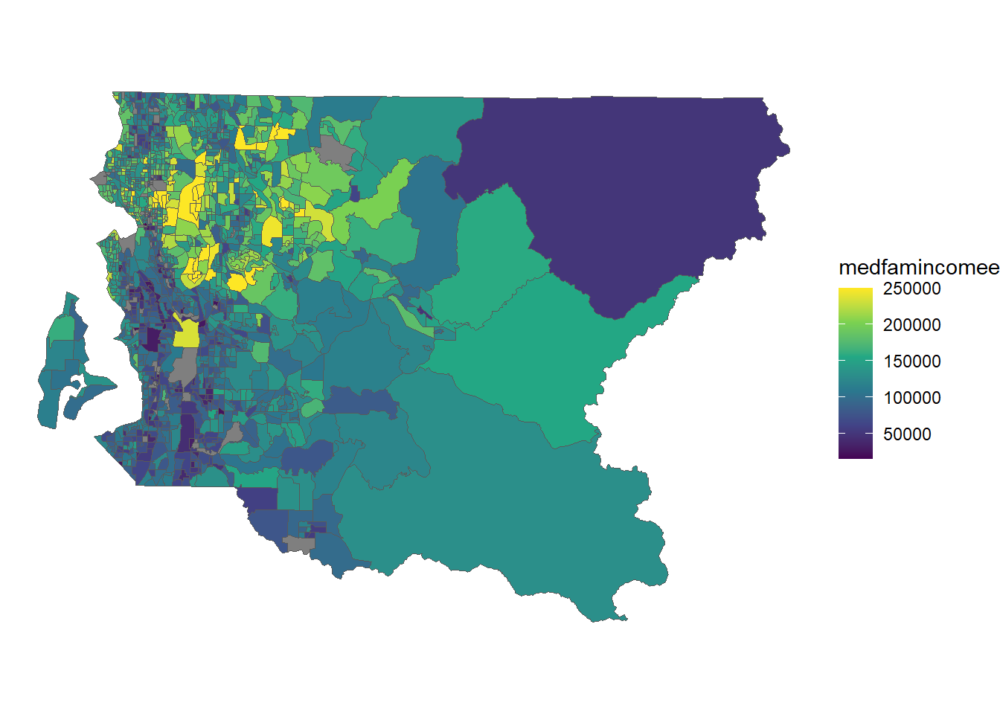
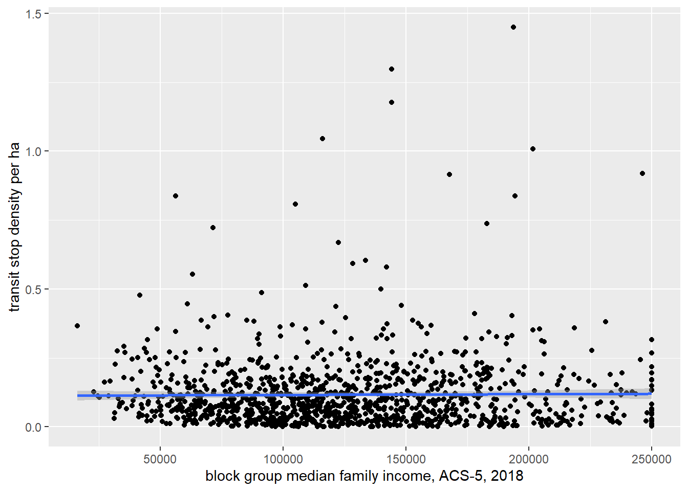
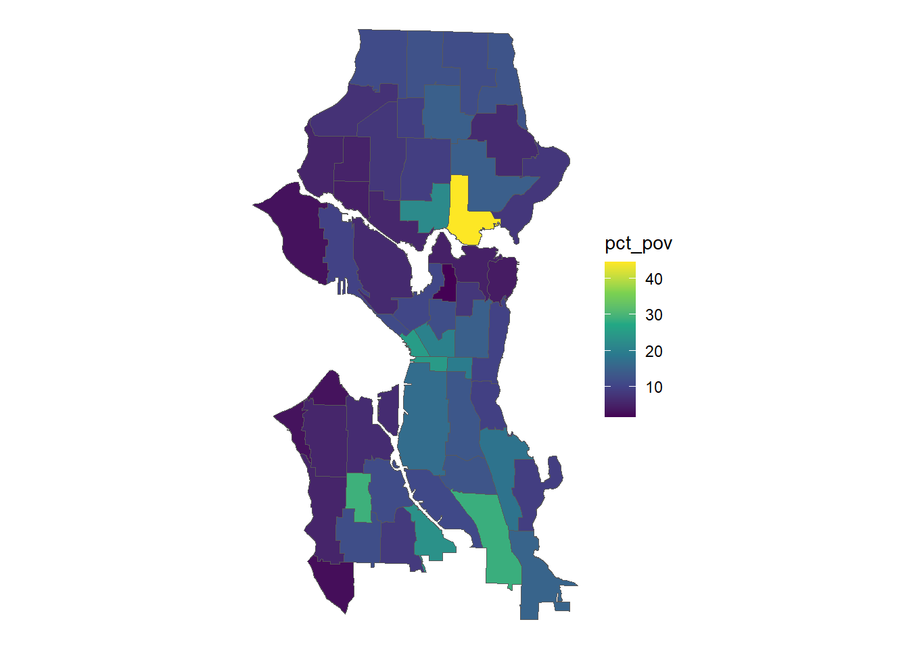
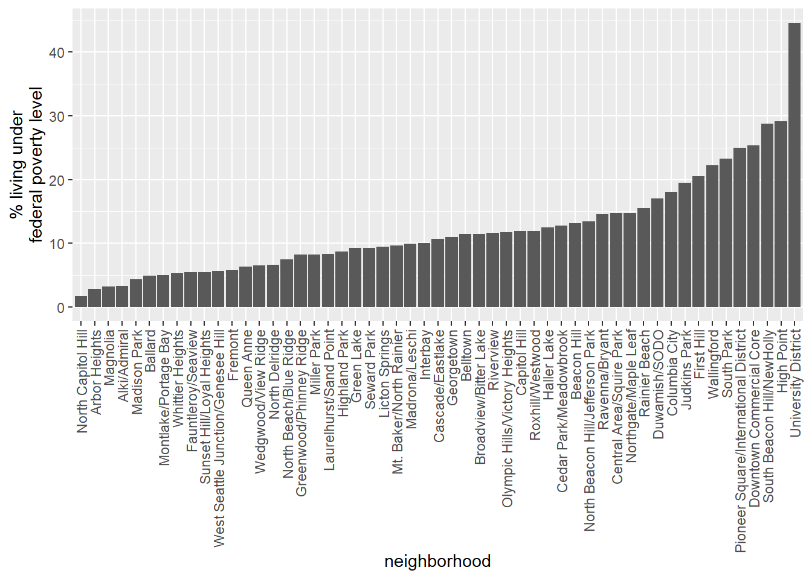

Chapter 6 Geoprocessing
Make sure that mydatadir points to the location where the GIS data files were downloaded and unzipped.
mydatadir <- "H:/gis_in_r/data"6.1 Buffering
Buffering is one of the most common geoprocessing techniques. sf provides the st_buffer() command to create Euclidean buffers around vector features.
Let’s create 1 km buffers around the points we created earlier. For this process, first we transform the points to UTM 10 so when we specify a buffer distance of 1,000 that translates to 1 km, and finally we transform to WA State Plane N.
# create the points
snxy <- data.frame(name = "Space Needle", x = -122.3493, y = 47.6205)
space_needle <- st_as_sf(snxy, coords = c("x", "y"), crs = 4326)
shxy <- data.frame(name = "Savery Hall", x = -122.3083, y = 47.6572)
savery_hall <- st_as_sf(shxy, coords = c("x", "y"), crs = 4326)
zooxy <- data.frame(name = "Woodland Park Zoo", x = -122.3543, y = 47.6685)
wp_zoo <- st_as_sf(zooxy, coords = c("x", "y"), crs = 4326)
pts <- rbind(space_needle, savery_hall, wp_zoo)
# make the buffer with inline transforms
pts_buf_1km <- pts %>% st_transform(26910) %>% st_buffer(dist = 1000) %>% st_transform(2926)Export the point buffers to our GPKG:
# write to the GPKG
mygpkg <- file.path(mydatadir, "r_gis.gpkg")
st_write(obj = pts_buf_1km,
dsn = mygpkg,
layer = "pts_buf_1km",
quiet = TRUE,
append = TRUE,
delete_layer = TRUE)We will also make 500 ft buffers around the freeways of King County and export them to the GPKG
if(! exists("kctrans")){
kctrans <- st_read(
file.path(mydatadir, "Metro_Transportation_Network_TNET_in_King_County__trans_network_line.shp"),
quiet = TRUE)
}
# freeways are KC_FCC_ID = F
kcfwy <- kctrans %>% filter(KC_FCC_ID == "F")
# buffer
kcfwy_buf_500ft <- kcfwy %>% st_transform(2926) %>% st_buffer(500)
# write to the GPKG
mygpkg <- file.path(mydatadir, "r_gis.gpkg")
st_write(obj = kcfwy_buf_500ft, dsn = mygpkg, layer = "kcfwy_buf_500ft", quiet = TRUE, update = TRUE)## Warning: 'update' is deprecated.
## Use 'append' instead.
## See help("Deprecated")What the !#*$&? Why are there all those little tiny buffers around the freeway lines? To be addressed below….

6.2 Point-in-polygon
For the next analysis, we will tabulate the density of transit stops in each census block group and then look for patterns in transit stop density by median household income.
First we need to get the census block groups and median family income using tidycensus. Covering the use of tidycensus is beyond the scope of this workshop; for an introduction, see the Computational Demography seminar presented by Connor Gilroy and Neal Marquez.
Using pipes in magrittr, we perform an inline CRS transformation to WA State Plane N and also calculate the area of each bloc group (which we will need for the density measurement later).
If you did not get your census API key, you will need to load the layer from the census.gpkg file:
acs5_2018_bg <- st_read(dsn = file.path(mydatadir, "census.gpkg"), layer = "acs5_2018_bg", quiet = TRUE)
st_crs(acs5_2018_bg) <- 2926# cache data
options(tigris_use_cache = TRUE)
# where to store data
tigris_cache_dir <- mydatadir
# if you have your API key, enter it here rather than using the system environment variable
# myapikey <- "foobar"
myapikey <- Sys.getenv("CENSUS_API_KEY")
census_api_key(myapikey)## To install your API key for use in future sessions, run this function with `install = TRUE`.# get the data and project it to match the bus stops, also calculate the area
acs5_2018_bg <- get_acs(
geography = "block group",
variables = c(medfamincome="B19113_001"),
state = "WA",
county = "King",
geometry = TRUE,
moe = 95,
cache_table = TRUE,
output = "wide") %>%
st_transform(2926) %>%
mutate(area_ft = as.numeric(st_area(.)))## Getting data from the 2015-2019 5-year ACS## Using FIPS code '53' for state 'WA'## Using FIPS code '033' for 'King County'colnames(acs5_2018_bg) <- tolower(colnames(acs5_2018_bg))Quickly view the data in a ggplot():
acs5_2018_bg %>%
ggplot() +
geom_sf(aes(fill = medfamincomee), size = .25) +
scale_fill_viridis_c() +
theme_void()
Load the bus stops:
busstop <- st_read(
file.path(mydatadir, "busstop/busstop.shp"), quiet = TRUE)
st_crs(busstop) <- 2926## Warning: st_crs<- : replacing crs does not reproject data; use st_transform for thatcolnames(busstop) <- tolower(colnames(busstop))First, let’s look at the column names in busstop:
print(colnames(busstop))## [1] "objectid" "busstop_id" "zonekey" "begin_date" "end_date" "tlink_id" "ramkey" "access_lvl"
## [9] "landing_pd" "trnsfr_pt" "authority" "awning" "bearing_cd" "curb" "curb_ht" "bay"
## [17] "bike_rack" "created_by" "cross_stre" "curb_paint" "dt_created" "dt_mapped" "dt_mod" "displacemt"
## [25] "rampositio" "ditch" "ext_surfc" "ext_width" "frm_cross" "frm_intrst" "juris" "reg_fare"
## [33] "rfp_dist" "zip_code" "i_sgn_anch" "i_sgn" "int_loc" "link_len" "pcnt_from" "t_nd_from"
## [41] "mod_by" "news_box" "non_mt_sgn" "bollards" "num_shelt" "on_street" "othr_cov_a" "owner"
## [49] "paint_len" "pk_stp_sur" "pullout" "ret_wall" "rfa_flag" "rt_sgn_tp" "sched_hold" "shdr_surf"
## [57] "shdr_width" "side" "side_cross" "side_on" "swlk_width" "sgn_mt_dir" "sgn_pst_an" "sgn_pst_tp"
## [65] "spc_sgn_tp" "length" "status" "stop_type" "address" "add_commnt" "strp_width" "t_signal"
## [73] "wlk_surf" "xcoord" "ycoord" "xcoord_off" "ycoord_off" "geometry"To get the census data as an attribute on each transit stop, use st_join():
busstop <- busstop %>% st_join(acs5_2018_bg)We now see that there are additional variables, particularly medfamincomee:
print(colnames(busstop))## [1] "objectid" "busstop_id" "zonekey" "begin_date" "end_date" "tlink_id"
## [7] "ramkey" "access_lvl" "landing_pd" "trnsfr_pt" "authority" "awning"
## [13] "bearing_cd" "curb" "curb_ht" "bay" "bike_rack" "created_by"
## [19] "cross_stre" "curb_paint" "dt_created" "dt_mapped" "dt_mod" "displacemt"
## [25] "rampositio" "ditch" "ext_surfc" "ext_width" "frm_cross" "frm_intrst"
## [31] "juris" "reg_fare" "rfp_dist" "zip_code" "i_sgn_anch" "i_sgn"
## [37] "int_loc" "link_len" "pcnt_from" "t_nd_from" "mod_by" "news_box"
## [43] "non_mt_sgn" "bollards" "num_shelt" "on_street" "othr_cov_a" "owner"
## [49] "paint_len" "pk_stp_sur" "pullout" "ret_wall" "rfa_flag" "rt_sgn_tp"
## [55] "sched_hold" "shdr_surf" "shdr_width" "side" "side_cross" "side_on"
## [61] "swlk_width" "sgn_mt_dir" "sgn_pst_an" "sgn_pst_tp" "spc_sgn_tp" "length"
## [67] "status" "stop_type" "address" "add_commnt" "strp_width" "t_signal"
## [73] "wlk_surf" "xcoord" "ycoord" "xcoord_off" "ycoord_off" "geoid"
## [79] "name" "medfamincomee" "medfamincomem" "area_ft" "geometry"To calculate density we need a total count of transit stops by census unit id (GEOID) as well as the area. Note because all variables are identical within each census units, we can use medfamincomee = min(medfamincomee) in the summarize function.
# tabulate the count of transit stops
nbusstop <- busstop %>%
group_by(geoid) %>%
summarise(n_busstop = n(),
density_ha = n() / min(area_ft) * 107639 ,
medfamincomee = min(medfamincomee))Let’s make a scatter plot with a regression line and error.
nbusstop %>% ggplot(aes(x = medfamincomee, y = density_ha)) +
geom_point() +
geom_smooth(method = "lm") +
xlab("block group median family income, ACS-5, 2018") + ylab("transit stop density per ha")## `geom_smooth()` using formula 'y ~ x'## Warning: Removed 78 rows containing non-finite values (stat_smooth).## Warning: Removed 78 rows containing missing values (geom_point).
Looks like no relationship exists. How about some formal statistics?
pander(
summary(
lm(data = nbusstop, medfamincomee ~ density_ha)))| Estimate | Std. Error | t value | Pr(>|t|) | |
|---|---|---|---|---|
| (Intercept) | 126067 | 2017 | 62.51 | 0 |
| density_ha | 4414 | 11473 | 0.3848 | 0.7005 |
| Observations | Residual Std. Error | \(R^2\) | Adjusted \(R^2\) |
|---|---|---|---|
| 1186 | 51827 | 0.000125 | -0.0007195 |
6.3 Polygon-on-polygon
6.3.1 Intersect
For the next exercise we will estimate the proportion of persons living below the federal poverty level within Seattle neighborhoods using 2018 ACS data at the tract level (poverty data are not available at the block group level).
First we will load the city neighborhood boundaries, including a CRS transformation to WA State Plane N:
nhood <- st_read(
file.path(mydatadir, "Community_Reporting_Areas.shp"),
quiet = TRUE) %>%
st_transform(2926)
names(nhood) = tolower(names(nhood))Get the tract data for the total count of persons for whom poverty status was determined and the count of persons living below the poverty level, also transforming to WA State Plane N and calculating the area of the tract.
If you did not get your census API key, you will need to load the layer from the census.gpkg file:
acs5_2018_trt <- st_read(dsn = file.path(mydatadir, "census.gpkg"), layer = "acs5_2018_trt", quiet = TRUE)
st_crs(acs5_2018_trt) <- 2926# get the data and project it to match the bus stops, also calculate the area
acs5_2018_trt <- get_acs(
year = 2018,
geography = "tract",
variables = c(n="B06012_001", n_pov="B06012_002"),
state = "WA",
county = "King",
geometry = TRUE,
moe = 95,
cache_table = TRUE,
output = "wide") %>%
st_transform(2926) %>%
mutate(area_ft_tract = as.numeric(st_area(.)))
colnames(acs5_2018_trt) <- tolower(colnames(acs5_2018_trt))Intersecting the tracts and neighborhoods will produce a polygon data set with data only for the area in common between both data sets. It will also subdivide polygons wherever there is an overlap between polygons from the different input layers. We also calculate the area of the resultant polygons (“slivers”) for estimating person counts within each sliver using area weighting under the (arguably incorrect) assumption that the population is uniformly distributed across the tract. The estimate of the count of persons within each sliver is calculated as
\[pop_{sliver} = pop_{tract} \times \frac{area_{sliver}}{area_{original}}\]
nhood_trt <- st_intersection(x = nhood, acs5_2018_trt) %>%
mutate(area_ft_intersect = as.numeric(st_area(.)),
n_est = ne * as.numeric(st_area(.)) / area_ft_tract,
n_est_pov = n_pove * as.numeric(st_area(.)) / area_ft_tract)## Warning: attribute variables are assumed to be spatially constant throughout all geometriesWe then sum the area-weighted counts for each neighborhood:
\[\sum_{i=1}^{n} pop_{sliver}\]
where \(i\) is the sliver, \(n\) is the count of slivers, and \(pop_{sliver}\) is the estimated population of the sliver.
This aggregation to the neighborhood level using the estimated counts of the number of persons and the number of persons living below poverty is done with group_by() and summarize()
nhood_pov <- nhood_trt %>%
group_by(gen_alias) %>%
summarize(
neighdist = first(neighdist),
n = sum(n_est),
n_pov = sum(n_est_pov),
pct_pov = round(sum(n_est_pov) / sum(n_est) * 100, 1))Let’s make a quick plot:
nhood_pov %>%
ggplot() +
geom_sf(aes(fill = pct_pov), size = .25) +
scale_fill_viridis_c() +
theme_void()
nhood_pov %>%
ggplot(aes(x = reorder(gen_alias, pct_pov), y=pct_pov)) +
geom_bar(stat = "identity") +
theme(axis.text.x = element_text(angle = 90, hjust = 1, vjust = 0.5)) +
xlab("neighborhood") + ylab("% living under\nfederal poverty level")
We can also export this for mapping in QGIS:
st_write(obj = nhood_pov,
dsn = mygpkg,
layer = "nhood_pov",
quiet = TRUE,
update = TRUE,
delete_layer = TRUE)## Warning: 'update' is deprecated.
## Use 'append' instead.
## See help("Deprecated")Here shown with quintiles:

6.3.2 Union
st_union() will make a single geometry from multiple geometries. We can use this to “dissolve” the freeway buffers we created before.
Let’s pipe together the st_union() and st_write() to dissolve the buffers and write to the GPKG in one step.
st_write(obj =
st_union(kcfwy_buf_500ft),
dsn = mygpkg,
layer = "kcfwy_buf_500ft_union",
quiet = TRUE, update = TRUE)## Warning: 'update' is deprecated.
## Use 'append' instead.
## See help("Deprecated")Verify in QGIS:

We can also dissolve based on a variable. In this example we are grouping by the neighdist variable, which represents the larger neighborhood districts, and summing the count of persons and the count of persons below the poverty level as well as calculating the percent below poverty. sf is doing a geometric st_union() behind the scenes.
# summarize == union
districts <- nhood_pov %>%
group_by(neighdist) %>%
summarise(
n = sum(n),
n_pov = sum(n_pov),
pct_pov = round(sum(n_pov) / sum(n) * 100, 1))
# save
st_write(obj = districts, dsn = mygpkg, layer = "districts", quiet = TRUE, update = TRUE, delete_layer = TRUE)## Warning: 'update' is deprecated.
## Use 'append' instead.
## See help("Deprecated")Here the dissolved layer is shown in QGIS using poverty percent quintiles.